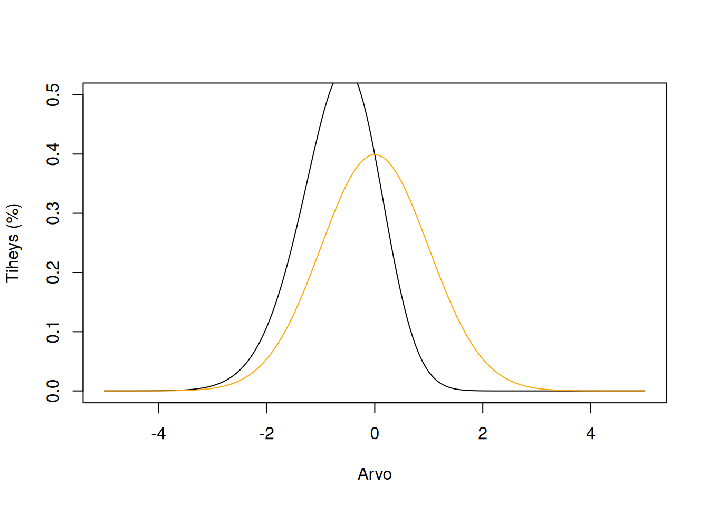
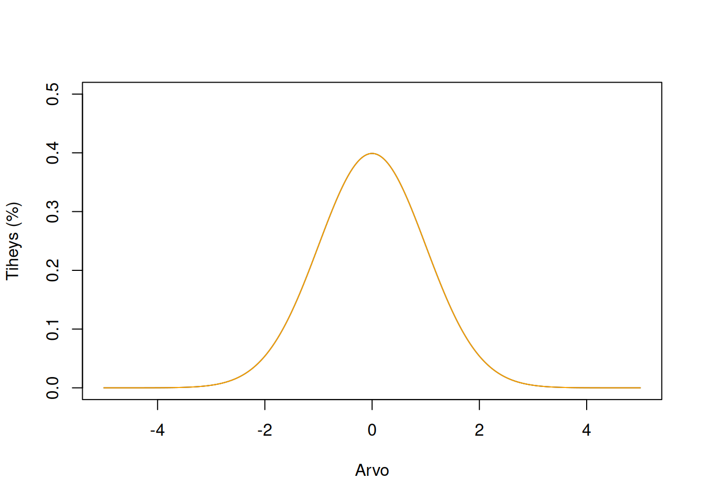
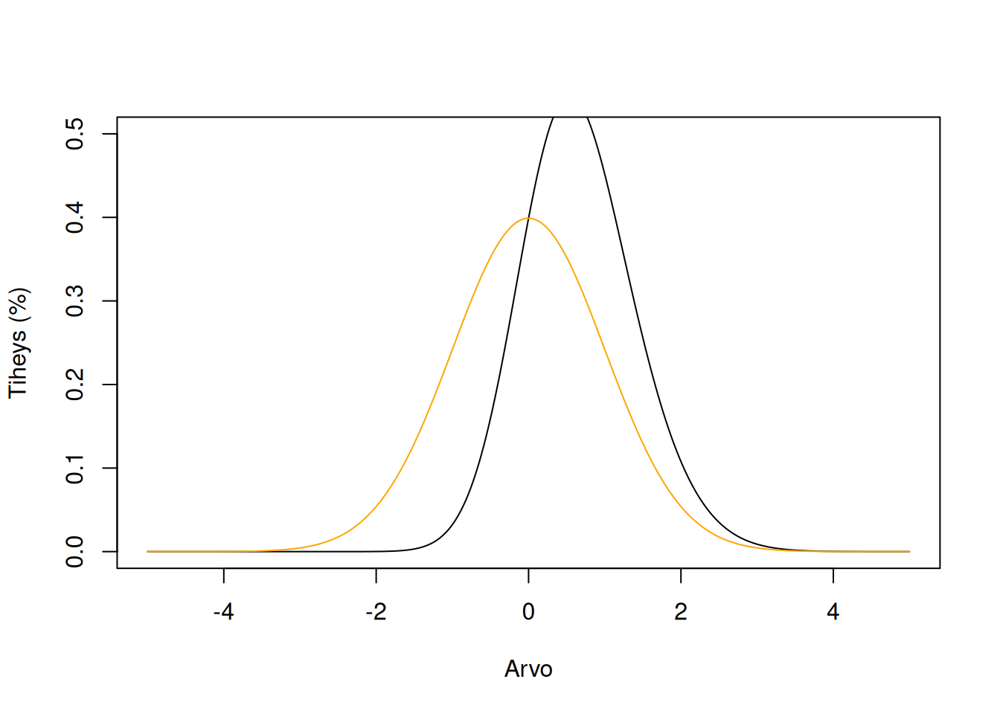
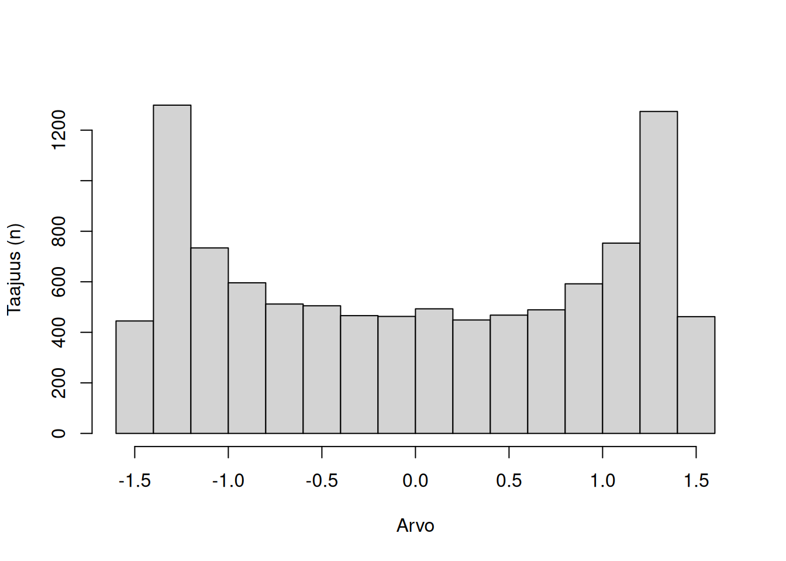
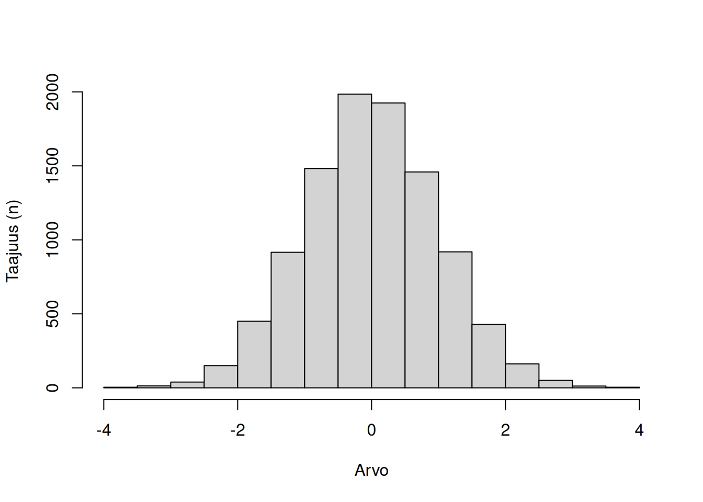
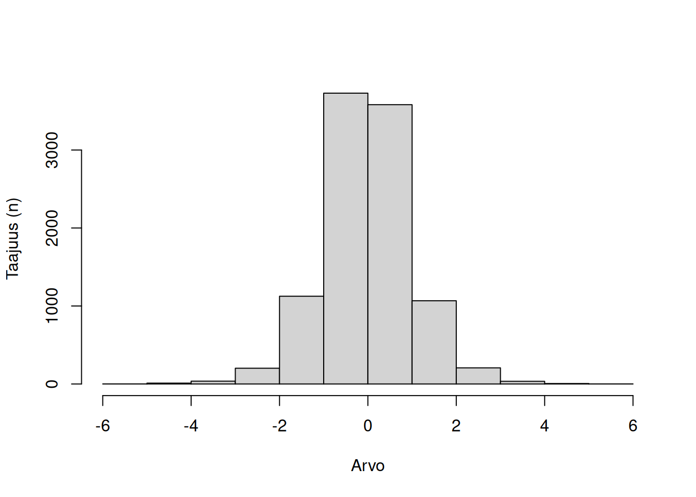

8 Hajontaluvut
Tässä luvussa käydään läpi hajontalukujen määritelmät, käyttö ja toteuttaminen Excelissä.
Hajontaluku on yksittäinen luku, joka kertoo jotain jakauman jakautumisesta keskiarvon ympärille. Toisin sanoen, miten hajanaista jakauman data on verrattuna keskiarvoon?
Hajontalukuja, joita tässä kirjassa käydään läpi ovat: vinouma, kurtoosi, vaihteluväli, poikkeamasumma, oikaistu neliösumma, varianssi ja keskihajonta.
8.1 Vinouma
Mittausasteikot: Järjestysasteikosta ylöspäin
Vinouma kertoo jakauman “häntäisyydestä”, eli nojaako jakauma jompaan kumpaan suuntaan. Voidaan myös puhua relatiivisesta hajonnasta keskiarvon ympärillä. Vinouma voi olla positiivinen tai negatiivinen.
Positiivinen vinouma tarkoittaa, että jakaumassa on yleisemmin esiintyviä arvoja normaalijakauman keskiarvon oikealla puolella (suurempia arvoja) kuin vasemmalla puolella.
Negatiivinen vinouma tarkoittaa vastakohtaa, että jakaumassa esiintyy yleisemmin normaalijakauman keskiarvoa pienempiä arvoja vasemmalla puolella.
Funktiot Excelissä:
JAKAUMAN.VINOUMA(alue)
Funktio: Alaluku 19.7.2.2.



8.2 Kurtoosi
Mittausasteikot: Järjestysasteikosta ylöspäin.
Kurtoosi kertoo jakauman häntien koosta, eli kuinka paljon ääripisteitä jakaumassa esiintyy verrattuna normaalijakaumaan. Kurtoosi voi olla positiivinen tai negatiivinen.
Negatiivinen kurtoosi, eli platykurtoosi, tarkoittaa että ääripisteitä on paljon suhteessa normaalijakaumaan. Datapisteitä on siis suhteessa enemmän ääripääalueilla kuin keskellä, mitä keskiarvo ei ottaisi huomioon.
Nollakurtoosi, eli mesokurtoosi, tarkoittaa, että ääripisteitä on yhtä paljon kuin normaalijakaumassa. Tällöin liikakurtoosi (ks. alla) on nolla.
Positiivinen kurtoosi, eli leptokurtoosi, tarkoittaa että ääripisteitä on vähän suhteessa normaalijakaumaan. Tällöin useimmat datapisteet kerääntyvät keskiarvon kohdalle.
Kurtoosi ilmaistaan usein liikakurtoosina, jolloin arvo on keskitetty nollalle. Tällöin negatiivinen kurtoosi on aina negatiivinen arvo, ja toisin päin. Kurtoosin raaka-arvo keskittyy kuitenkin kolmeen: normaalijakauman Pearsonin kurtoosiarvo on 3, negatiivinen kurtoosi on alle kolmen ja positiivinen kurtoosi yli kolmen.
Funktiot Excelissä:
KURT(alue)
Funktio: Alaluku 19.7.2.2.



8.3 Vaihteluväli
Mittausasteikot: Järjestysasteikosta ylöspäin.
Vaihteluvälillä tarkoitetaan jakauman suurimpia ja pienimpiä arvoja, sekä näiden välistä eroa.
Suurin arvo on yksinkertaisesti jakauman suurin esiintyvä arvo, pienin arvo on vastaavasti pienin esiintyvä arvo. Jakauman pituus (engl. range) on suurimman ja pienimmän arvon ero, eli kuinka laajalla skaalalla arvoja esiintyy.
Esimerkkinä voidaan ajatella datajakaumaa, jossa on viisi datapistettä: \([1, 2, 3, 4, 5]\). Sen suurin arvo on \(5\) ja pienin arvo on \(1\). Jakauman pituus on siten \(5-1 = 4\).
Funktiot Excelissä:
MIN(alue) - MAKS(alue)
Funktiot: Alaluku 19.7.2.1.
8.4 Poikkeamasumma
Mittausasteikot: Välimatka-asteikosta ylöspäin.
Poikkeamasummalla (engl. deviance) summataan yhteen jakauman jokaisen datapisteen ero keskiarvoon. Poikkeamasumma lasketaan kaavalla:
\[ \text{poikkeamasumma} = \sum_{i = 1}^{n}{ x_i - \bar{x} } \tag{8.1}\]
Jossa \(x_i\) on datapisteen \(i\) arvo, \(\bar{x}\) on jakauman aritmeettinen keskiarvo, ja \(n\) on datapisteiden määrä.
Poikkeamasumma on aina nolla jokaiselle datajakaumalle. Koska keskiarvo asettuu jakauman keskipisteeseen, positiiviset ja negatiiviset erot keskiarvoon tasoittavat toisensa, joten kaavan tulokseksi tulee aina arvo \(0\). Poikkeamasumma ei siten ole hyödyllinen työkalu itsessään, mutta käytetään oikaistun neliösumman laskemiseen.
Esimerkkinä sama datajakauma \([1, 2, 3, 4, 5]\). Jakauman keskiarvo on \(\bar{x} = \frac{1+2+3+4+5}{5} = 15/5 = 3\). Jakauman poikkeamasumma lasketaan siten \((1-3) + (2-3) + (3-3) + (4-3) + (5-3) = -2-1+0+1+2 = 0\).
Poikkeamasummalle ei löydy Excel-kaaviota, koska sen suora käyttö on joka tapauksessa turhaa kun se aina tuottaa tuloksena nollan.
8.5 Oikaistu neliösumma
Mittausasteikot: Välimatka-asteikosta ylöspäin.
Oikaistu neliösumma (engl. sum of squared errors) on jatkolasku poikkeamasummalle. Erona poikkeamasummaan oikaistussa neliösummassa kaikki datapisteiden erot keskiarvoon nostetaan toiseen potenssiin, eli otetaan niiden neliö, ennen summaamista. Tällöin saadaan arvo, joka ei ole nolla. Oikaistu neliösumma lyhennetään muotoon \(SS\), parametrin englanninkielisestä nimestä. Oikaistun neliösumman kaava on:
\[ \text{SS} = \sum{(x-\bar{x})^2} \tag{8.2}\]
Esimerkkinä sama datajakauma kuin aikaisemmin, eli \([1, 2, 3, 4, 5]\), jonka keskiarvo on \(3\). Oikaistu neliösumma on \((1-3)^2 + (2-3)^2 + (3-3)^2 + (4-3)^2 + (5-3)^2 = 4 + 1 + 0 + 1 + 4 = 10\).
Funktiot Excelissä:
OIKAISTU.NELIÖSUMMA(alue)
Funktio: Alaluku 19.7.2.4.
8.6 Varianssi
Mittausasteikot: Välimatka-asteikosta ylöspäin.
Varianssi on datajakauman oikaistu neliösumma jaattuna varianssin vapausasteella. Varianssin vapausaste on \(N-1\), eli jakauman datapisteiden määrä minus yksi. Varianssi lyhennetään muotoon \(s^2\), mutta muita nimimuotoja ovat myös \(\sigma^2\) , \(Var(X)\) tai \(V(X)\). Varianssin kaava on:
\[ s^2 = \frac{SS}{\text{df}} = \frac{\sum{(x-\bar{x})^2}} {N-1} \tag{8.3}\]
Jatketaan samalla esimerkkillä kuin aikaisemmin. Datajakauman \([1, 2, 3, 4, 5]\) oikaistu neliösumma on \(SS = 10\). Täten datajakauman varianssi on \(s^2 = 10/(N-1) = 10/4 = 2.5\).
Varianssin mittayksikkö on alkuperäisen datajakauman yksikkö, mutta neliönä. Jos datajakauman alkuperäinen yksikkö on euroa, varianssi ilmaistaan neliöeurona - vaikka tämä ei itsessään merkitse mitään (mikä “neliöeuro” edes olisi?).
Funktiot Excelissä:
VAR.S(alue) - VAR.P(alue)- Käytä
VAR.Sjos kyseessä on otos,VAR.Pjos kyseessä on koko populaatio.
- Käytä
Funktiot: Alaluku 19.7.2.5.
8.7 Keskihajonta
Mittausasteikko: Välimatka-asteikosta eteenpäin.
Keskihajonta on jatkoa varianssille. Keskihajonnassa neliö poistetaan neliöjuurella, jolloin saadaan jakauman keskivertainen ero keskiarvoon - eli kuinka paljon jokainen datapiste keskimäärin eroaa keskiarvosta.
Keskihajonta ilmaistaan joko tekstillä \(SD\) (englannin nimestä standard deviation), tai matemaattisilla symboleilla \(\sigma\) (populaation keskihajonta) ja \(s\) (otoksen keskihajonta). Keskihajonta lasketaan kaavalla:
\[ s = \sqrt{s^2} = \sqrt{\frac{\sum{(x-\bar{x})^2}} {N-1}} \tag{8.4}\]
Aikaisemmassa esimerkissä datajakauman varianssi oli \(s^2 = 2.5\), jolloin sen keskihajonnaksi saadaan \(s = \sqrt{2.5} \approx 1.58\).
Keskihajonta ilmaistaan samassa mittayksikössä kuin datajakauma. Jos esimerkkijakaumamme edustaa euroja, voidaan siis sanoa, että sen keskihajonta on 1,58 euroa.
Mitä isompi keskihajonta, sitä enemmän vaihtelua keskiarvosta datajakaumassa esiintyy. Sama pätee pieneen keskihajontaan. Määrittely, onko jokin keskihajonta “suuri” tai “pieni” on suhteellinen ja riippuu itse mittayksiköstä ja sen keskiarvosta: koska keskiarvomme esimerkissä oli kolme euroa, voidaankin sanoa että puolentoista euron keskihajonta on suhteellisen suuri.
Funktiot Excelissä:
KESKIHAJONTA.S(alue) - KESKIHAJONTA.P(alue)- Käytä
KESKIHAJONTA.Sjos kyseessä on otos,KESKIHAJONTA.Pjos kyseessä on koko populaatio.
- Käytä
Funktiot: Alaluku 19.7.2.6.